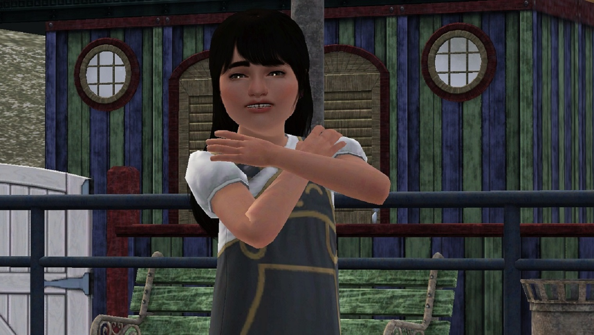
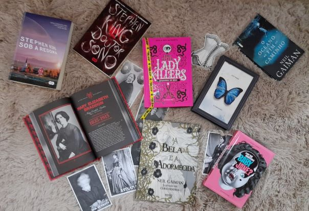
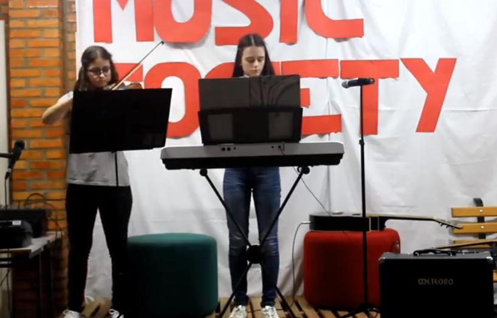

Me chamo Anna Carolina Ferronato da Silva e faço aniversário no mesmo dia que o Alfred Hitchcock. Sou natural de Xanxerê - SC. Em 2019, concluí o Curso Técnico Integrado em Informática no IFSC campus Xanxerê e atualmente estou cursando Ciência da Computação na Universidade Ferderal da Fronteira Sul no campus Chapecó. Me dedico ao máximo às coisas que eu preciso fazer e sou muito organizada. No meu tempo livre gosto de jogar The Sims, Stardew Valley e Don't Starve. Também gosto muito de ler, principalmente livros de suspense e sobre serial killers. Enquanto faço tudo isso não posso deixar de ouvir uma música, atualmente minha banda favorita é a My Chemical Romance. Nas horas vagas sou modelo de maquiagem para minha tia.
Em 2019 tive a oportunidade de parcipar do Technovation Girls, uma competição de programação internacional só para meninas. O objetivo era desenvolver um aplicativo que resolvesse um problema na sua comunidade. Eu e minha equipe, Powerful Daisies, desenvolvemos um aplicativo para ajudar na prevenção do suícidio. Nossa ideia foi selecionada para a final da competição que ocorreu em São Francisco - Califórnia. Passamos uma semana incrível de muitos aprendizados e desafios, visitando grandes empresas do Vale do Silício.
Um hobbie que faz parte da minha vida desde que eu tinha 5 anos é jogar The Sims. Acompanhei todas as gerações do jogo, e até hoje tenho um amor muito grande por ele. Jogando eu posso usar minha criatividade para criar a história que eu desejar e além disso eu amo ter o controle.
Durante meus anos no IFSC, eu adquiri um novo hobbie. Precisava de algo para fazer durante as aulas de engenharia de software, então encontrei a leitura. Leio principalmente livros de suspense e gosto muito de ler sobre serial killers reais. Meus autores favoritos são Stephen King e Neil Gaiman.
Gosto muito de música e não só de ouvir. Há alguns anos fiz aulas de piano e hoje tento aprender sozinha. Além disso, comecei a aprender sobre a moda dos séculos passados, o que me inspirou a começar a costurar. Também gosto de cozinhar e as pessoas dizem que sei fazer um bolo muito bom.
